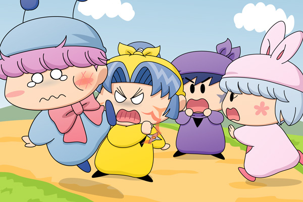

|
ムルモ＆サスケ＆ヤマネ＆パピィ(1)
今日は妖精学校の臨時の登校日。
人間界で修行中の妖精や、忍術修行に出ている妖精も、みんなが妖精学校に集まる特別な一日。
その帰り道の出来事です。
パピィ「ムルモ殿・・いえムルモ。
今日は私と一緒に帰るわよ」
ムルモ「ほえぇっ、パピィ！？
・・・ボクは今日はヤマネしゃんと帰るでしゅ」
ぷいっとそっぽを向くムルモ。
そしてヤマネの方を見ると、いつもの営業スマイルを作りました。
―――せっかくの登校日に何かきっかけを作ってムルモに近づきたいパピィは、ちぇんじクッキーを使って別の女の子に入れ替わって近づくことを考えました。
ヤマネはパピィの相談に乗り、もちろん快く承諾。
もっともクッキーを食べたヤマネ（すでに中身はパピィ）の大暴れにより、建物が何軒か破壊されましたが―――
ヤマネ「ムルモ・・・」
サスケ「ヤマネはオイラと一緒に帰るんだぜ！！」
ムルモ「ねぇヤマネしゃん聞いてくだしゃい。
昨日パピィはボクにこんなひどいことをしたんでしゅよ」
ヤマネ「・・・」
ムルモ「それに加えあんなひどいことも・・・」
ヤマネ「・・・・・・」
ムルモ「ホント、パピィと一緒にいるといつもろくな事がないで・・」

バコーーーンッ！！！
ヤマネのパンチを食らったムルモは宙を舞い、尻餅をつきました。
ムルモ「ほえぇっ、ヤマネしゃん・・・！？」
ヤマネ「何よっ さっきから人が大人ちく聞いていれば
人の悪口ばっかり言って！！
ムルモなんて大嫌いっ！」
パピィ「パピィ殿、駄目でございます」
ヤマネ「あらいけない・・・ついあたちったら・・
それに今日はヤマネだったわね」
パピィ「そうでご・・・そうよ、私がパピィなの」
ムルモ「ほぇ、、ヤマネしゃんがボクに暴力をふるうなんて・・・。
ショックでしゅ・・・」
ヤマネ「違うのよムルモ・・」
サスケ「ヤ、ヤマネがあんなにも大胆にムルモに暴力をふるうとは
知らなかったぜ・・・」
パピィ「サスケ先輩、違うでございます〜〜っ」
そんなわけでお約束的展開を描いてみました。もう少しサスケを絡ませてあげたかったですが、この３人の前では影が薄くなりますね(^^;。
普通に考えて入れ替わってるのがバレバレですが、それに気がつかないのが妖精クオリティ。この一件の後も、至る所でヤマネが暴れまくって、妹思いのネズミが慌てないか心配です。逆にパピィの評価が上がって、ムルモのライバルが増えたりして(^^;。(2010/9/24) |